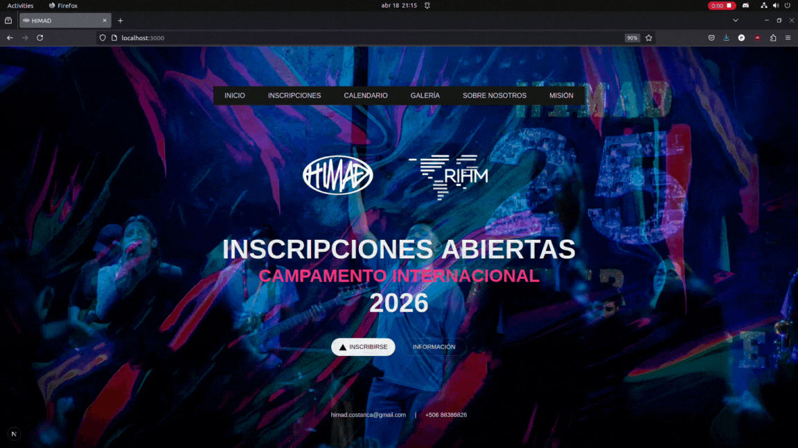
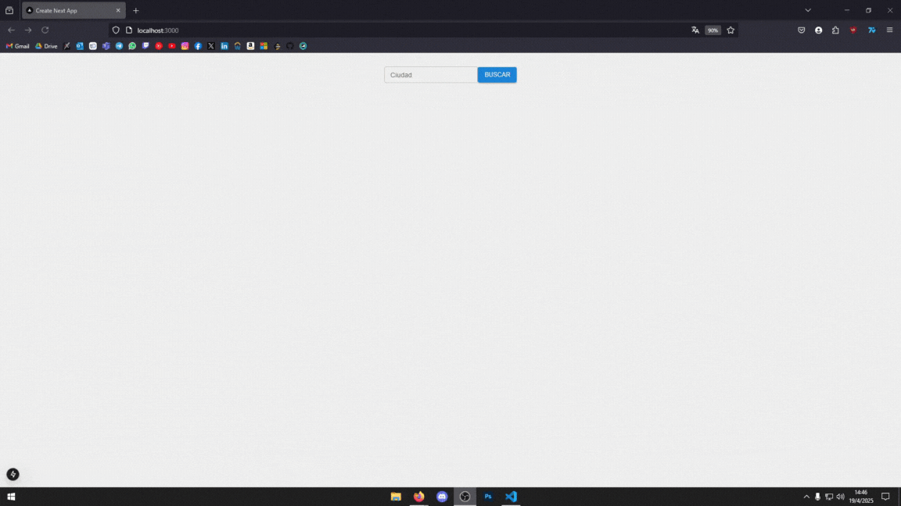
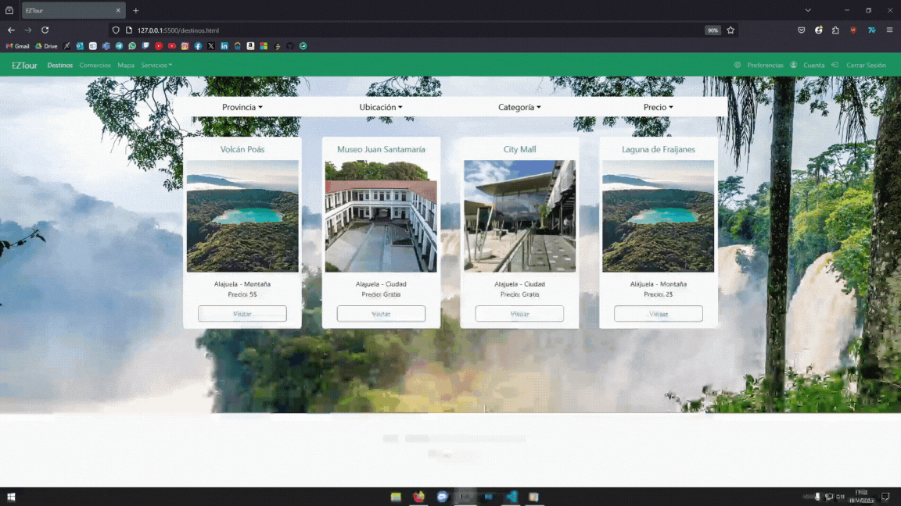

As a trip leader assistant I had the responsibility to ensure the correct flow of missionary trips. In every trip, I needed to make sure to pick up the missionary team at the airport, coordinate transportation and lodging, make sure the team has all that is necessary during their entire stay and finally, I had to go with the team to any destination they had in mind to translate and give assistance in anything that is required, this includes, translating conversations, helping in construction and painting, creating a provisions list that fits the budget, buying the supplies and verifying that everything is in the correct amounts and prices, delivering the supplies to the families in need, coordinating with every destination so that everything is ready for the arrival, etc. This is a really demanding job that requires quick thinking, proactiveness, good time management and great problem solving and adaptation skills.
Seasonal Staff - EmployedAs a Support Agent at 5CA Limited, I provided excellent customer service and technical support to clients. Utilized my skills in troubleshooting, problem-solving, and communication to resolve customer issues and ensure their satisfaction working above the company's average for productivity and customer satisfaction. Collaborated with cross-functional teams to escalate and resolve complex technical problems.
Temporary Position - EmployedWorked as an IT Service Desk at National Instruments, supporting software, networks and hardware while also working with the system giving accesses and account provisioning. Provided technical support and assistance to internal users. Collaborated with cross-functional teams to ensure timely resolution of technical problems and user satisfaction.
Professional Practice - EmployedAs an Event Organizer at Esport Costa Rica, I successfully planned and executed various gaming events. Utilized my organizational and communication skills to coordinate logistics, manage vendors, and ensure the smooth operation of events. Collaborated with cross-functional teams to create engaging and memorable experiences for participants.
EmployedTechnological Institute of Costa Rica (TEC)
Active StudentCTP Carrizal
GraduatedCTP Carrizal
GraduatedDevelopment of a website that allows a foundation to receive both national and international registrations for its camps, as well as display all relevant information about the foundation and its activities.
The project was developed alongside the client to ensure that functionality and quality requirements were met. The website was developed using Next and Node.js.
The page was published and is currently being used to this day. The project was developed in a period of 2 months, from the first meeting with the client to the final delivery.


This project is a weather application built with Next.js and Material-UI. It allows users to search for weather information by entering a city name. The app fetches weather data using an API and displays it in two components:
The app uses React hooks (useState) for state management and Material-UI components for styling and layout.
EZTour is a web-based application designed to provide users with an interactive and visually appealing platform for exploring tourist destinations, services, and amenities in Costa Rica. The application is built using HTML, Bootstrap, JavaScript and SQL.
EZTour aims to serve as a comprehensive guide for tourists and locals, offering information about destinations, services, and businesses in Costa Rica. It provides an intuitive and user-friendly interface for planning trips and exploring the country.
The application is currently in development, and the team is working on implementing all the necessary features and enhancements to improve user experience and functionality.
